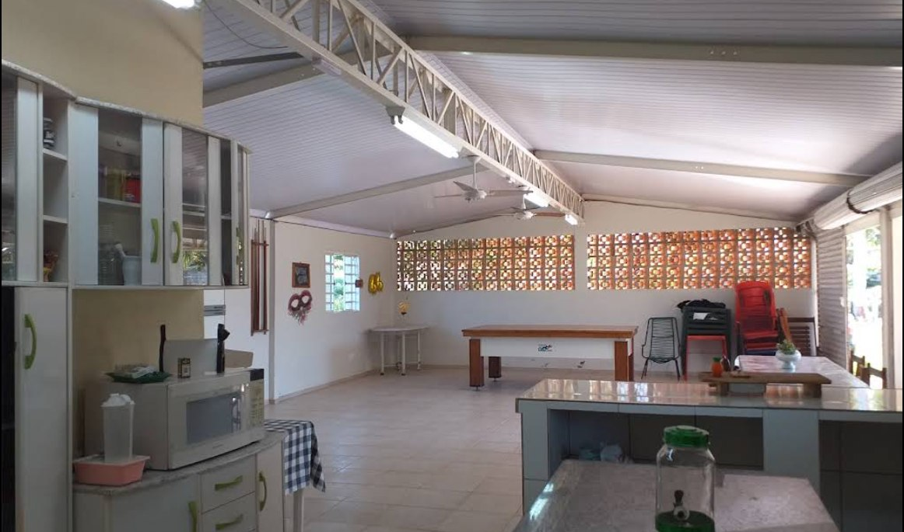

CHÁCARA BELA VISTA · MARÍLIA, SP
Um lugar para
estar junto.
Uma mesa posta, o verde lá fora e tempo para
aproveitar a companhia.
NOSSOS ESPAÇOS
Explore os ambientes.
Tour em vídeo
30 sPasseio virtual gerado a partir das fotos da chácara. As passagens entre os ambientes são aproximadas.

A CHÁCARA
Entre uma partida
e uma conversa.
O balcão da cozinha dá para o salão de jogos. Enquanto uns cuidam do churrasco, outros se reúnem em volta da mesa. A sala de estar e o quarto com beliches completam o passeio pela Bela Vista.
LOCALIZAÇÃO E CONTATO
Como chegar.
Rua Ipê Branco, 45 · DirceuMarília, São Paulo(14) 98802-6036Abrir no Google Maps